Débora Malqui · Diseño de marca
Cuatro marcas, de la primera idea al uso real.
Cada caso muestra el logo final con sus versiones y usos, la idea que lo sostiene y el camino que llevó hasta ahí, con las pruebas de cada paso. Están ordenados del más reciente al más antiguo.
2026 · Identidad completa
Medido
Una consultoría que mide el marketing de pymes de Estados Unidos e Israel, en inglés y en hebreo. La marca tenía que sentirse como un instrumento de medir sin dibujar uno.
- Logo
- Hebreo
- Paleta
- Tipografía
- Manual
- Sitio web
La idea
El nombre dice lo que hace. La o final es un anillo lleno al 66 %, en sentido horario: una medición que muestra lo que hay y lo que falta, que es la regla de toda la marca.
El hueco del anillo es idéntico al hueco de la d. En hebreo, la vav final se llena igual, hasta el techo de la dalet. El amarillo solo existe sobre negro o como fondo detrás de negro.
- Rol
- Diseño de la marca, el manual y el sitio
- Entregables
- Logo en tres superficies y en hebreo, anillo, favicon, avatar, tablero de entrega, manual y web
- Estado
- Logo cerrado y entregado
Camino
Cuatro direcciones, nueve referencias
Un tablero con cuatro mundos (cinta métrica, libro mayor, instrumento y topografía), armado con nueve sitios de referencia y los premios de diseño web del mes. Quedó la base de libro mayor, el informe que un contador firmaría, con la tipografía del instrumento.
Seis paletas
Sobre esa base armé seis paletas, cada una aplicada a un informe de muestra con su contraste calculado. Ninguna convenció todavía.
Lo obvio se descartó
La regla y la cinta métrica quedaron afuera porque dicen construcción y no marketing. Después probé cinco símbolos de buscador: la o como lupa, el nombre dentro del buscador, el primer resultado, la respuesta y el clic. Tampoco.
Seis marcas hechas solo con letras
Pasé a marcas sin ícono: el punto final, la M como gráfico, el resaltador, el bloque, la o que se completa y la pendiente. Quedó la quinta.
La o como anillo
Medí el anillo sobre la o real de doce tipografías, con hebreo en todas, hasta que calzara con la palabra. Quedaron tres finalistas: Plus Jakarta Sans, Manrope y Schibsted Grotesk.
El logo real, en ocho paletas
Con el anillo elegido, pasé el logo a contornos reales y lo probé en ocho paletas, con el favicon, el avatar y las etiquetas de confianza al lado.
Negro y amarillo, con el contraste calculado
Probé siete amarillos. El cálculo mostró que el amarillo sobre blanco rinde entre 1,2 y 2,1, y sobre negro entre 8,9 y 16,6. De ahí la regla: el amarillo va sobre negro o detrás de negro, nunca como letra sobre claro.
Plus Jakarta contra Manrope
Las dos finalistas, con el mismo amarillo, el mismo anillo y las mismas superficies, lado a lado. Ganó Manrope 800, con más identidad, y Assistant 800 para el hebreo.
Ajustes de ojo entrenado
El hueco de la o pasó a ser el de la d. El anillo quedó al 66 %. En hebreo, el corte de la vav coincide con una línea de la dalet.
Entrega
Versiones, anillo, favicon y avatar, espacio de respeto, tamaños mínimos y qué no hacer, todo en un tablero. Los archivos van en contornos, sin depender de la fuente. Después vinieron el manual y el sitio.
Versiones
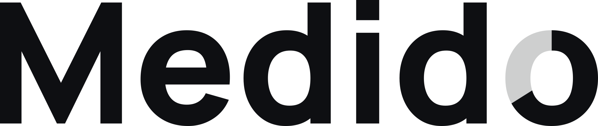
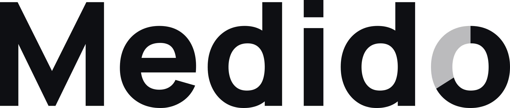
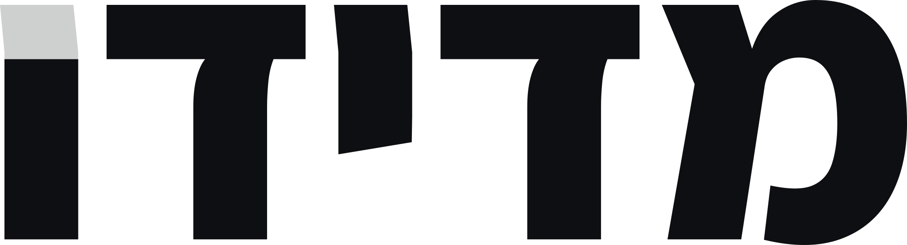
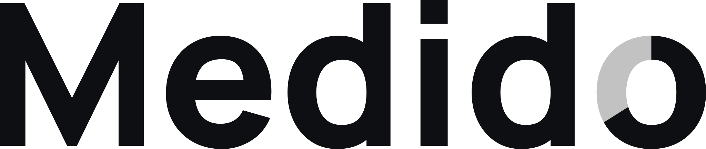
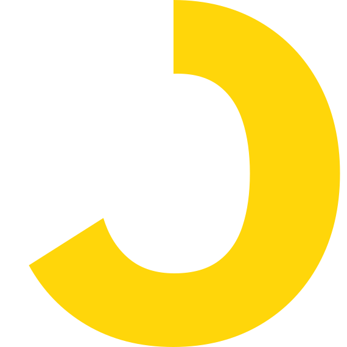
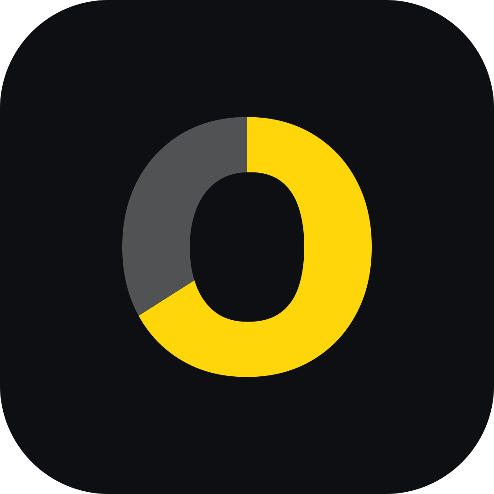
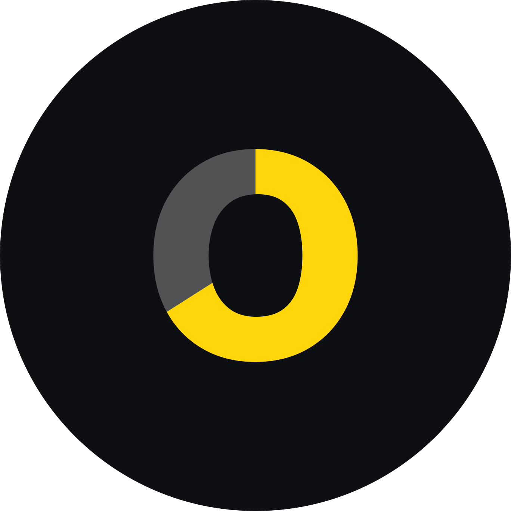
Usos
Ficha técnica
- Negro
#0E0F12 - Amarillo Sol
#FFD60A13,6:1 sobre negro - Blanco
#FFFFFF - Gris de apoyo
#A7ADB88,5:1 sobre negro
- Tipografía
- Manrope 800 para el logo y los títulos, Assistant 800 para el hebreo, JetBrains Mono para datos.
- Espacio de respeto
- x es el alto de la o. Libre en los cuatro lados.
- Tamaño mínimo
- 72 px de ancho en pantalla (20 mm impreso), 64 px en hebreo. Debajo, solo el anillo.
- Regla de color
- El amarillo solo sobre negro o como fondo detrás de negro. Nunca letra amarilla sobre claro.
2026 · Identidad inicial de un podcast
El Salto
Podcast semanal con historias reales de olim jadashim, producido por La Casa TLV. Partí de un logo ya existente, en azul y blanco, y lo leí antes de tocarlo.
- Logo
- Dos propuestas
- Tipografía
- Favicons
- Presentación
La idea
Aliá significa subida, y dar un salto es subir. Por eso la sombra del logo ahora va hacia arriba y a la derecha, nunca hacia abajo. Se mantuvo lo que la gente ya reconocía, el azul, el blanco y el nombre, y se sumó un guiño a La Casa.
El equipo pidió cercanía, autenticidad y pertenencia, con tono de charla de café. Salieron dos propuestas: B, un micrófono bajo tres techos de casa, y C, la o hecha taza de café.
- Rol
- Lectura del logo, exploración, diseño y presentación
- Entregables
- Dos propuestas finales, cuatro SVG, doce favicons, tablero de aplicaciones y presentación
- Estado
- Propuestas entregadas, el equipo elige
Camino
Leer el logo recibido
Lo leí en dos capas, lo que se ve y lo que dice. Mayúsculas negras en azul marino suenan a institución, la sombra cae mientras el nombre habla de subir, y nada anticipa que es un podcast. Decisión: se queda el azul, el blanco, el nombre y la sombra, ahora hacia arriba. Se suma un guiño a La Casa.
Catorce tipografías
Probé catorce familias en mayúsculas y en minúsculas, tres de ellas con hebreo. Quedó Rubik: gratuita, con hebreo, varios pesos y un ExtraBold que sostiene el azul.
Tres ideas de isologo
Tres símbolos para el micrófono, B1 concéntrico, B2 emisión y B3 micrófono-casa, cada uno probado de grande a 16 px, sobre blanco y sobre azul.
Las primeras composiciones
El micrófono-casa y la taza en vertical, en horizontal y en una sola línea, con y sin la línea de La Casa.
B2, de grande a chico
Con el B2 elegido, lo probé vertical, horizontal y como avatar circular, y el isologo solo, plano, desde el tamaño grande hasta el favicon.
Guías y alineación
El isologo a la altura de las mayúsculas, con líneas guía, y la taza alineada con la línea de La Casa a la izquierda.
El peso de la taza
La taza con la línea en cuatro pesos, de 400 a 700, y varios grosores de aro, hasta que el asa dejó de fundirse con la letra. La o de Rubik no servía y la dibujé a medida.
La O como micrófono
Probé que la O de SALTO fuera el micrófono, angosto y ancho, en blanco y en azul. Quedó descartada.
B en una línea, medido
El micrófono mide el bloque: probé cinco alturas hasta que sobresale arriba de las mayúsculas lo mismo que abajo, con la línea de La Casa al pie.
La simetría, verificada
Los hombros del techo interior caen sobre el eje de las letras, y el óvalo del micrófono quedó sólido, sin líneas dentro.
Dos propuestas y favicons por tamaño
Cada opción llegó en color y en reverso, con una línea fija, «una producción de La Casa TLV». Los favicons tienen un dibujo propio en 16, 32 y 64 px, con trazos más gruesos y menos detalle en los chicos.
Versiones
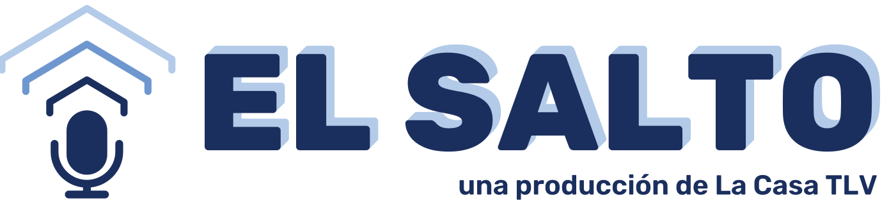
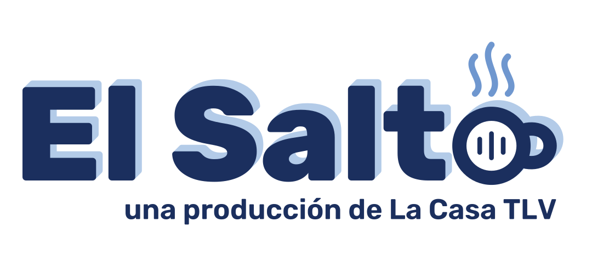
Usos
Ficha técnica
- Azul marino
#1B2F5Eaproximado al logo recibido - Azul medio
#6F97CF - Celeste
#B3CBE8 - Blanco
#FFFFFF
- Tipografía
- Rubik ExtraBold para el nombre, Rubik 600 para la línea «una producción de La Casa TLV», alineada a la derecha y pegada a la palabra.
- Sombra
- Solo en tamaños grandes y en impresión, siempre hacia arriba y a la derecha. En chico, plano.
- Descartes
- La O como micrófono, un micrófono con forma de casa, ondas-techo que chocan con la T.
2026 · Marca personal
DiDí
El logo de mi propio portfolio. Existía solo como una imagen de 380 × 193 px. Lo reconstruí en vector midiendo cada forma, lo ajusté y lo convertí en sistema.
- Logo vectorial
- Una tinta
- Favicon
- Movimiento
- Tipografía propia
La idea
DiDí se lee sin tipografía: dos D abiertas, sin asta, y dos barras cortas, con un acento inclinado a −50° que es la única diagonal y tuerce todo lo demás. La D rosa entra cortada desde el borde: ese corte es el movimiento del logo.
Cinco pasteles de luminosidad parecida, que se leen como una familia. Di, Dí: dos tiempos, el segundo con acento, como se dice el nombre.
- Rol
- Reconstrucción, ajuste y sistema de la marca
- Entregables
- Logo vectorial, una tinta clara y oscura, apilado, monograma, favicon, movimiento y dos tipografías
- Estado
- En uso en este sitio
Camino
Un PNG como único archivo
El logo solo existía como una imagen recortada de 380 × 193 px, sin vector ni archivo de diseño. Antes de mejorar nada había que reconstruirlo.
Medir en vez de redibujar
Medí cada forma por color (centros, radios, grosores y el ángulo del acento) hasta que el vector coincidió en un 95,4 % con el original. Es el máximo posible: el resto es el borde suavizado de un píxel.
Seis ajustes chicos
Corregí lo que un ojo entrenado ve como ruido de construcción: tres grosores, dos tamaños de D, tres líneas de base, un hueco distinto en cada sílaba y un acento cortado. No toqué lo que hace que sea este logo: el ángulo, el corte y los cinco colores.
Fondos y contraste
Probé cinco fondos con el contraste calculado. Los pasteles pasan 7:1 sobre carbón, grafito y azul noche. Sobre claro hay una versión de la misma familia con más tinta, y una versión de una sola tinta para firmas y sellos.
Una D sin palo, también en la letra
Redibujé la D mayúscula de las tipografías del sitio sin asta, con la misma construcción del logo. Nacieron DiDi Sans, sobre Figtree, y DiDi Mono, sobre DM Mono, ambas de licencia abierta. Esta página está escrita con ellas.
Ficha técnica
- Rosa
#E890CCacción - Celeste
#80ECECnavegación - Amarillo
#DCD060atención - Azul
#70B4F4dato - Verde
#ACEC84correcto - Azul noche
#0F1B2Dsuperficie
- Tipografía
- DiDi Sans para títulos y texto, DiDi Mono para etiquetas y datos.
- Espacio de respeto
- x = 40 unidades, dos trazos, 0,21 de la altura. La D cortada puede sangrar contra el borde o guardar la misma x, nunca un margen intermedio.
- Tamaño mínimo
- 120 px de ancho en pantalla (30 mm impreso). Entre 64 y 120 px solo en barras de navegación sobre carbón. Debajo de 64 px, el monograma Di.
- Una tinta
- Clara (#F2F2F2) sobre carbón, u oscura sobre claro.
2024 · Logo y marca de un festival
Red Española de Danzas Circulares
La red que reúne a quienes bailan danzas circulares en España, y su primer festival, «Directo al corazón», en Sant Feliu de Llobregat, Barcelona, en 2024.
- Símbolo
- Logotipo del festival
- Folleto
- Redes
- Remera
La idea
Las danzas circulares se bailan en círculo, y la marca lo cuenta: pétalos que giran hasta un centro en espiral, como un círculo de bailarines. La flor es el clavel, la que se asocia con España, y el nombre la rodea en arco para cerrar el círculo.
El festival habla más directo. «Directo al corazón» está escrito con una letra artística a pincel, en rojo, y la o de corazón se vuelve un corazón dibujado de un trazo. Es el mismo grupo con dos voces: la Red, serena, en azul marino y espiral; el festival, directo, en rojo.
- Rol
- Logo de la Red, logotipo del festival y piezas
- Entregables
- Símbolo en color y lineal, logotipo del festival, folleto, mail de inscripción, redes y remera
- Festival
- 2024, Sant Feliu de Llobregat, Barcelona
Camino
Empezar por lo evidente
Primero dibujé una ronda de figuras que giran y un molinete de pétalos. Decían danza, pero no decían España.
Del clavel al símbolo
Cambié las personas por una flor, el clavel, asociado a España. La animación muestra el camino: la foto, la síntesis en los colores de la marca, la línea que se dibuja girando como una ronda, el color que se abre desde la espiral y el nombre.
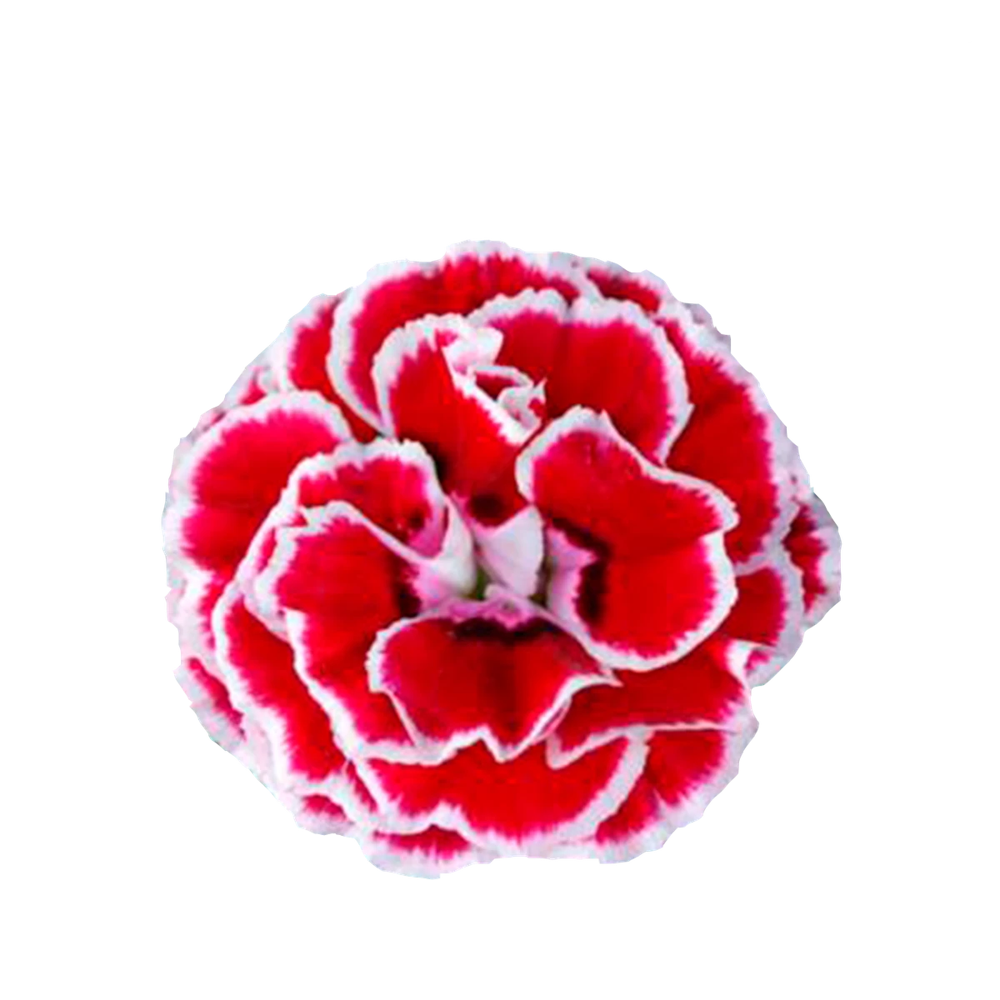
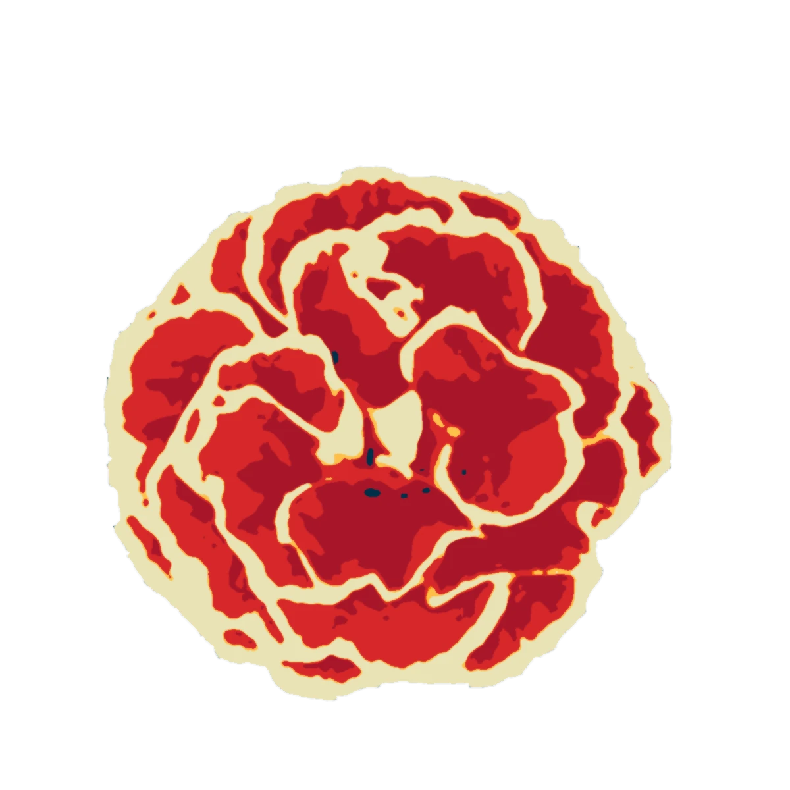
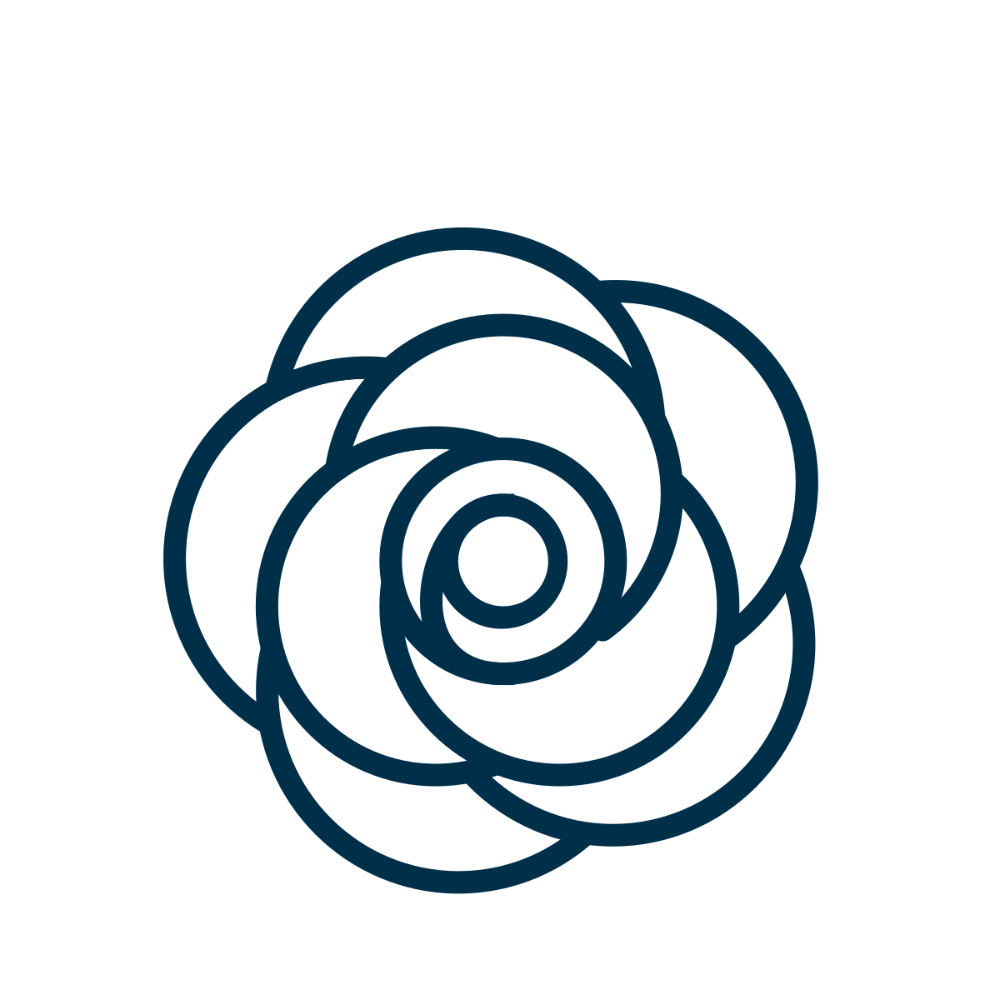
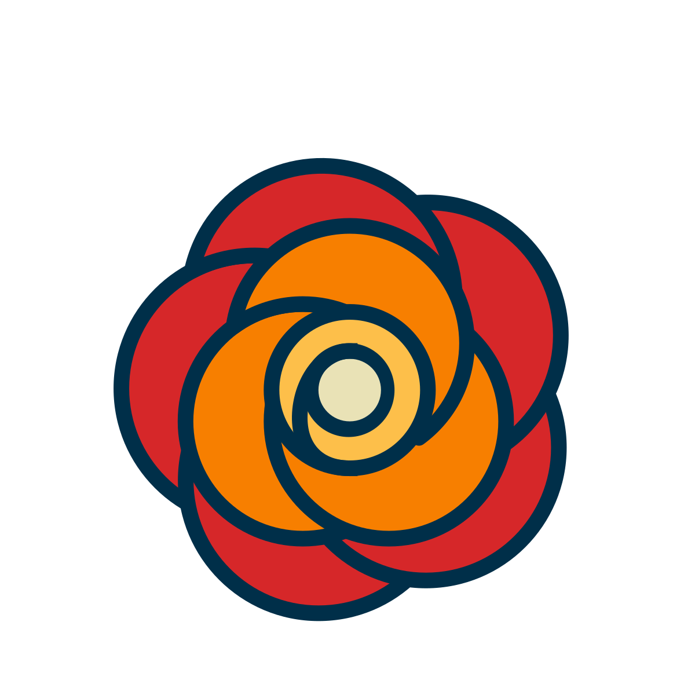
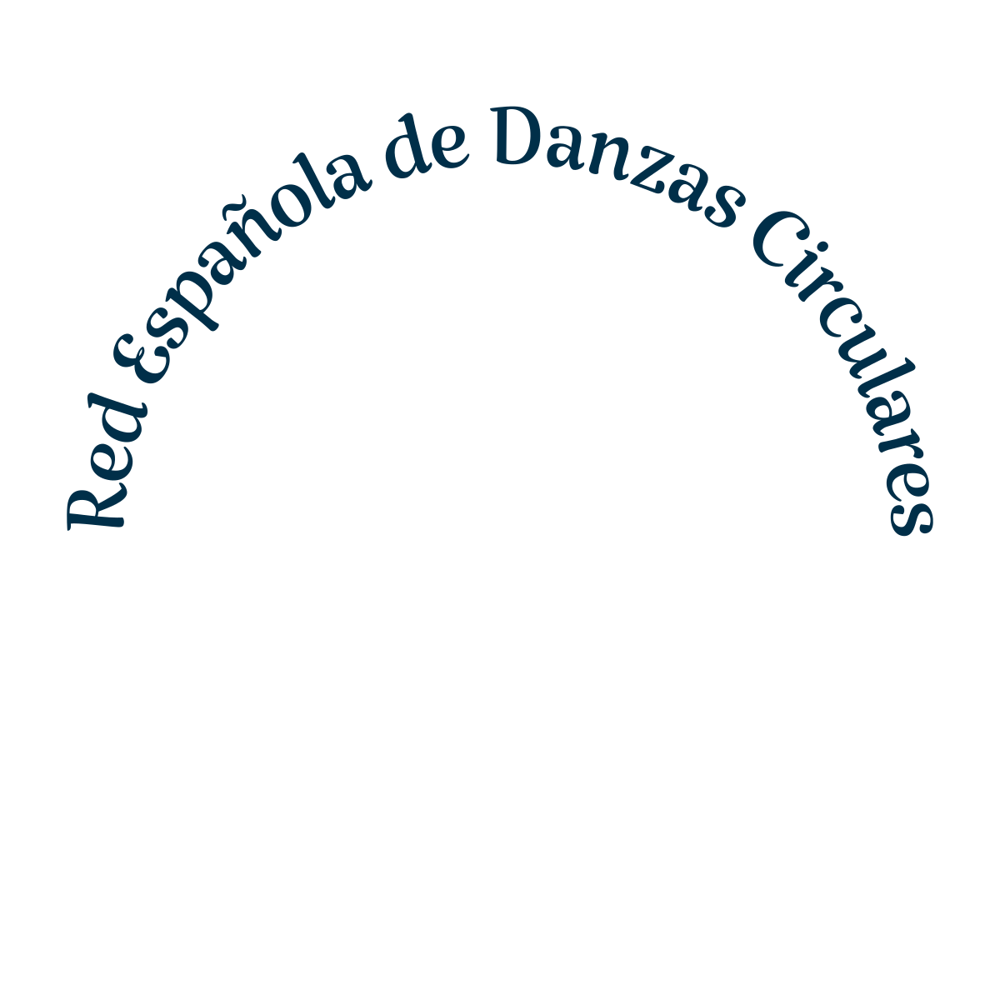
- Foto
- Síntesis
- Línea
- Color
- Nombre
Círculo y espiral
Los pétalos giran hacia un centro en espiral: la danza. Quedó en color y en una versión lineal de una tinta. El nombre rodea la flor en arco, en una serifa caligráfica, para que el conjunto sea otro círculo.
El festival, más directo
Para «Directo al corazón» hice un logotipo propio, con letra artística a pincel y la o convertida en corazón. Empezó en azul y terminó en el rojo de la flor. Una línea chica lo acompaña: «Festival de danzas circulares, primera edición».
El sistema en uso
Una paleta de cinco colores llevó la marca a un folleto, un mail de invitación con la inscripción, publicaciones para redes, una remera y un mockup de teléfono. Todo se ve abajo, en Usos.
Versiones
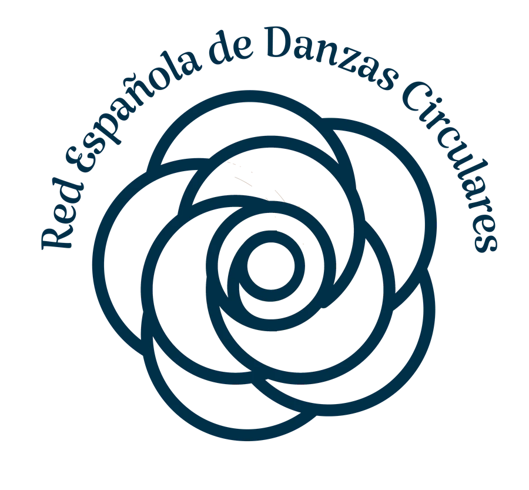
Usos
Ficha técnica
- Azul marino
#002F49contorno y nombre - Rojo
#D62729flor y festival - Naranja
#F77F00 - Ámbar
#FDBF4Acentro - Crema
#E9E2B6fondo
- Tipografía
- Serifa caligráfica en arco para la Red. Letra artística a pincel, con la o corazón, para el festival.
- Colores
- Valores tomados del archivo entregado.
Marcas de Débora Malqui. Los años son los del trabajo. Volver a Sobre mí